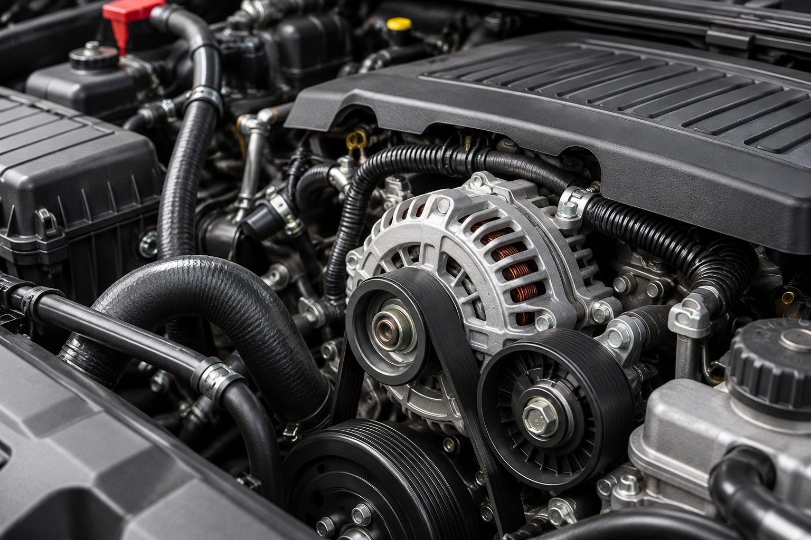
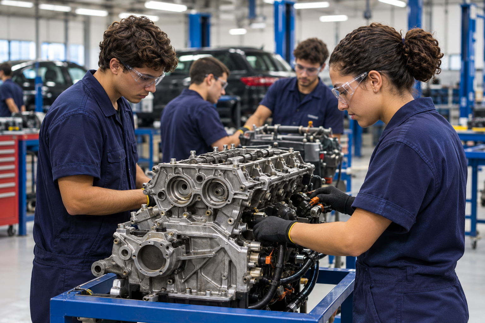
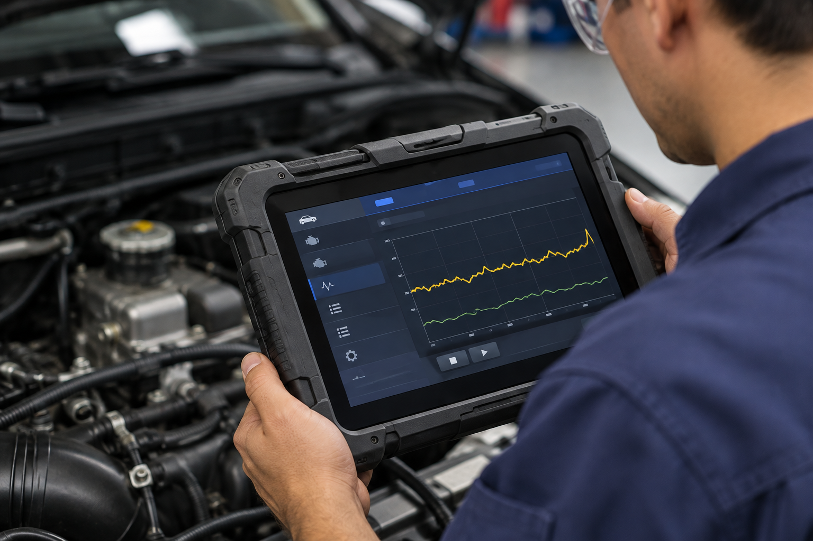
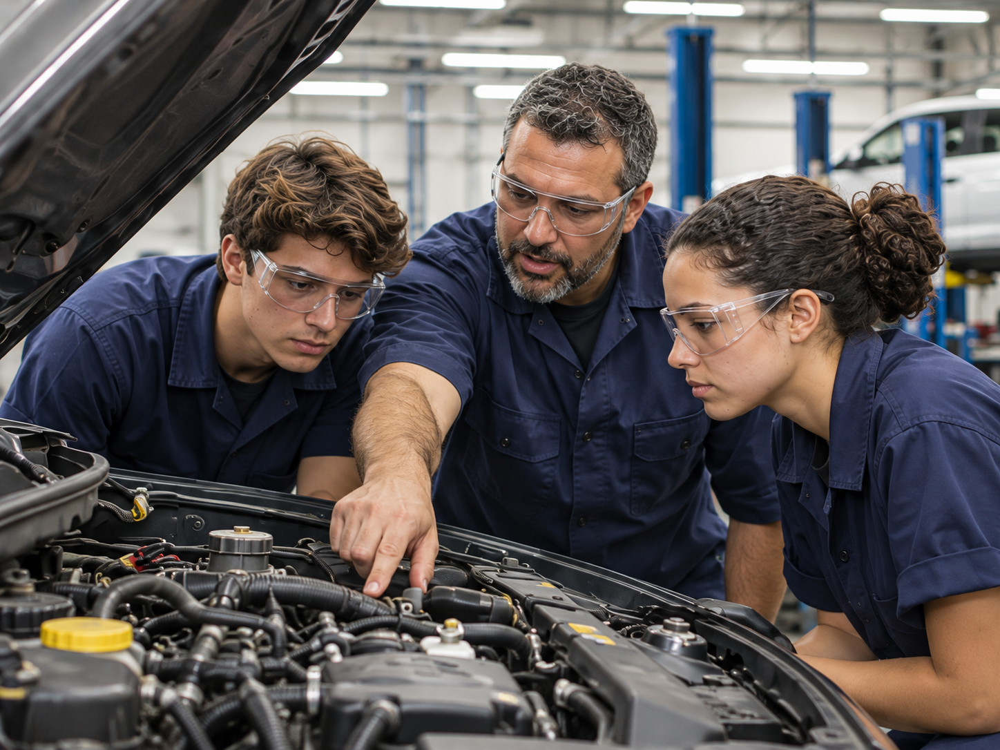

Sistemas mecânicos
Conheça o funcionamento de sistemas automotivos, como motor, transmissão, suspensão e freios.
Formação Técnica • Presencial
Conhecimento que coloca
seu futuro em movimento
Desenvolva competências para diagnosticar, inspecionar e realizar a manutenção de sistemas automotivos, com atenção à qualidade, à segurança e ao meio ambiente.

Entenda o funcionamento dos sistemas automotivos e desenvolva um olhar técnico para identificar falhas e propor soluções. Conecte conhecimento e prática para enfrentar os desafios da manutenção veicular.
Aprenda a interpretar informações e utilizar recursos de diagnóstico para investigar falhas.
Entenda o funcionamento dos sistemas automotivos e desenvolva um olhar técnico para identificar falhas e propor soluções. Conecte conhecimento e prática para enfrentar os desafios da manutenção veicular.
Atue com foco na segurança das pessoas, do veículo e do ambiente de trabalho.

Conheça o funcionamento de sistemas automotivos, como motor, transmissão, suspensão e freios.

Utilize recursos de diagnóstico para analisar o desempenho do veículo e identificar a causa de falhas.

Aplique os conhecimentos em atividades práticas, desenvolvendo a habilidade de manutenção com qualidade e segurança.
Consulte os requisitos, os horários e as condições de ingresso da turma escolhida.